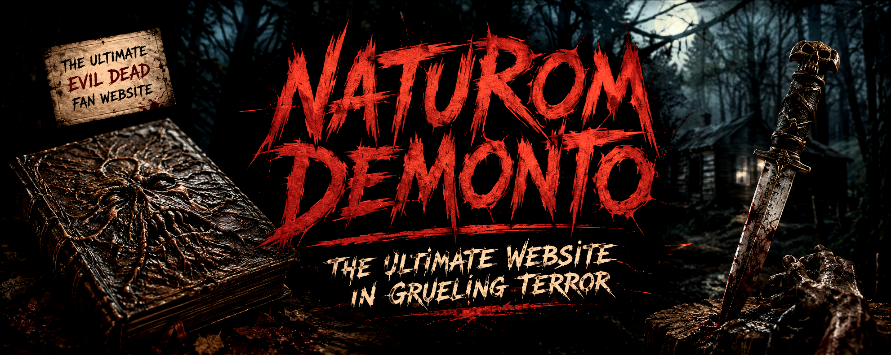
Throughout history, different copies of the Necronomicon Ex Mortis have been discovered. Each book contains its own dark secrets, forbidden passages and terrifying manifeststions of deadite possession.
This archive documents the Deadites unleashed by each known Necronomicon, showing which book summoned them and the events surrounding their appearance.
The Deadites are not simply reanimated corpses or creatures of a plague. They are manifestations of ancient evil, brought into the world through the forbidden knowledge contained within the Necronomicon Ex Mortis. A Deadite is not dangerous because it is part of a mindless horde. Its true power comes from its intelligence, cruelty and ability to torment those unfortunate enough to encounter it. These entities do not simply destroy... they corrupt, manipulate and revel in the suffering of their victims.
The greatest weapon of a Deadite is often the body it possesses. By taking the control of someone familiar, someone loved or someone trusted, the evil behind the possession turns memories and relationships into instruments of fear, guilt and regret. The face of a friend, the voice of a family member, or the appearance of someone who has been lost can become a cruel imitation designed to cause maximum suffering. This is what separates the Deadites from ordinary monsters. They are not zombies by any means, they are personal entities. They do not exist simply to spread or overwhelm the world; they exist to inflict torment upon those who disturb them.
The Necronomicon does not create an infection, it opens a doorway, allowing ancient forces to cross into our world and possess by the living and the dead. Every Deadite encounter begins with the same mistake: someone reading what should never have been read, awakening what should have remained forgotten. For this reason, deadites do not and should never be treated as a "virus" or "contagion". They do not operate in that way, and have no desire to do so.
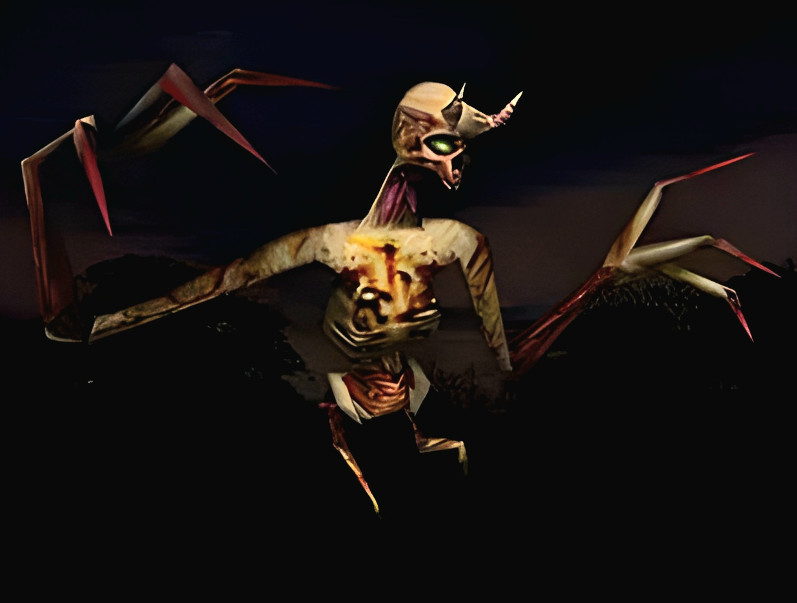
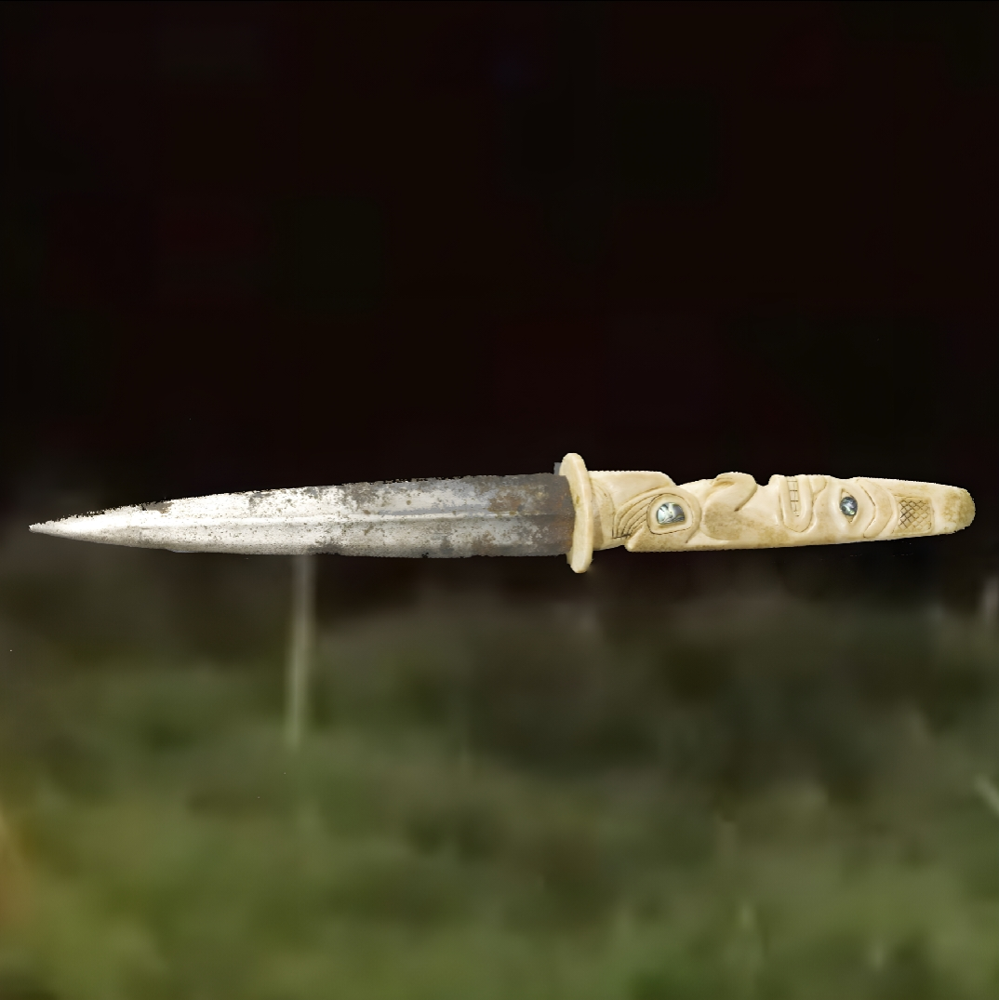
The ceremonial dagger discovered in Within the Woods (1978) is the weapon connected to the ancient spirit Tinga. Acting as the equivalent of the Kandarian Dagger for this entity, it serves as a powerful relic tied specifically to Tinga's influence, with its discovery leading to the awakening of the evil that possesses Bruce.
Tinga is an ancient evil spirit connected to the events of Within the Woods (1978). While it is uncertain whether Tinga is a separate entity or an early incarnation of Kandar from the Necronomicon lore, the lack of a confirmed book connection means Tinga is currently treated as an independent force. The only known relic directly associated with him is his ceremonial dagger. Tinga's deadites are very much similar to those of The Evil Dead, an unrelenting demon that hops from body to body to kill those that disturbed its rest.
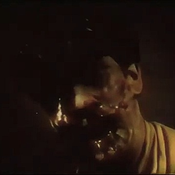
Bruce is one of the first victims of the ancient evil in Within the Woods (1978). After disturbing the burial ground protected by the spirit Tinga, he becomes possessed and transforms into a Deadite.
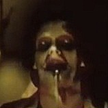
Scotty is the final victim of the evil unleashed in Within the Woods (1978). After Bruce's body is destroyed, the possessing spirit transfers to Scotty, transforming him into a Deadite at the film's conclusion.
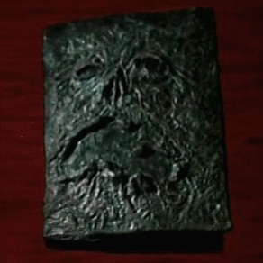
The ancient Sumerian Book of the Dead discovered in the woods of Tennessee. This is the Necronomicon connected to Ash Williams and his battle against evil across decades.
The entity of this book is a sadistic tormentor, akin to a spiteful child tearing the wings from a fly. Kandar is the ancient evil force connected to this Necronomicon, using possession and corruption to create Deadites and torment those who disturb its power.
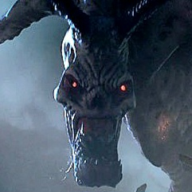
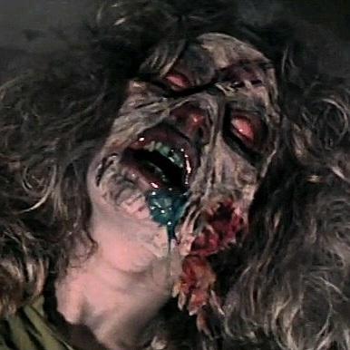
Cheryl Williams is Ash’s younger sister and one of the first victims of the Necronomicon in The Evil Dead (1981). After the Kandarian Demon is unleashed, she becomes possessed and transforms into a Deadite, attacking the others before being destroyed after Ashley burns the book.
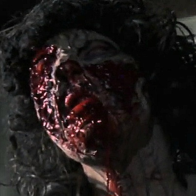
Shelly is Scotty’s girlfriend and one of the group members who visit the Knowby cabin in The Evil Dead (1981). After the Necronomicon awakens the evil presence, she becomes possessed and attacks Scotty before he is forced to dismember her.
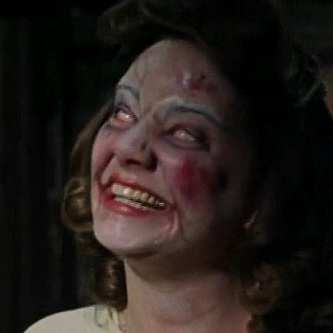
Linda is Ash Williams’ girlfriend who travels with him and the others to the Knowby cabin in The Evil Dead (1981). After the Kandarian Demon is released, she becomes possessed and turns into a Deadite, forcing Ash to decapitate her with a shovel.
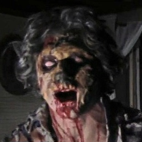
Scotty is Ash’s friend and one of the five people who visit the Knowby cabin in The Evil Dead (1981). After witnessing the deaths and possessions of the group, he attempts to survive but eventually succumbs to his injuries and dies before becoming possesed.
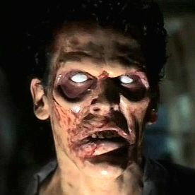
Ash Williams is the main first documented hero of Evil Dead lore. Briefly, Ash becomes possessed and transforms into a Deadite himself, but manages to overcome the evil influence twice and regain control of his body. He later would go on to be the prophecised hero from the sky, El Jefe.
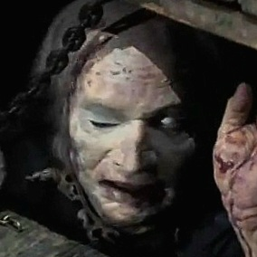
Henrietta Knowby is Professor Raymond Knowby’s wife, whose corpse is discovered beneath the cabin in Evil Dead II (1987). After being resurrected by the Kandarian Demon, she becomes a monstrous Deadite and battles Ash before being destroyed during the fight.
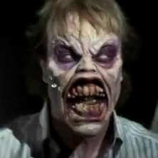
Ed Getley is a researcher who travels to the Knowby cabin with Professor Raymond Knowby’s daughter Annie in Evil Dead II (1987). After reading from the Necronomicon, Ed becomes possessed and transforms into a Deadite, attacking the others before being dismembered by Ash.
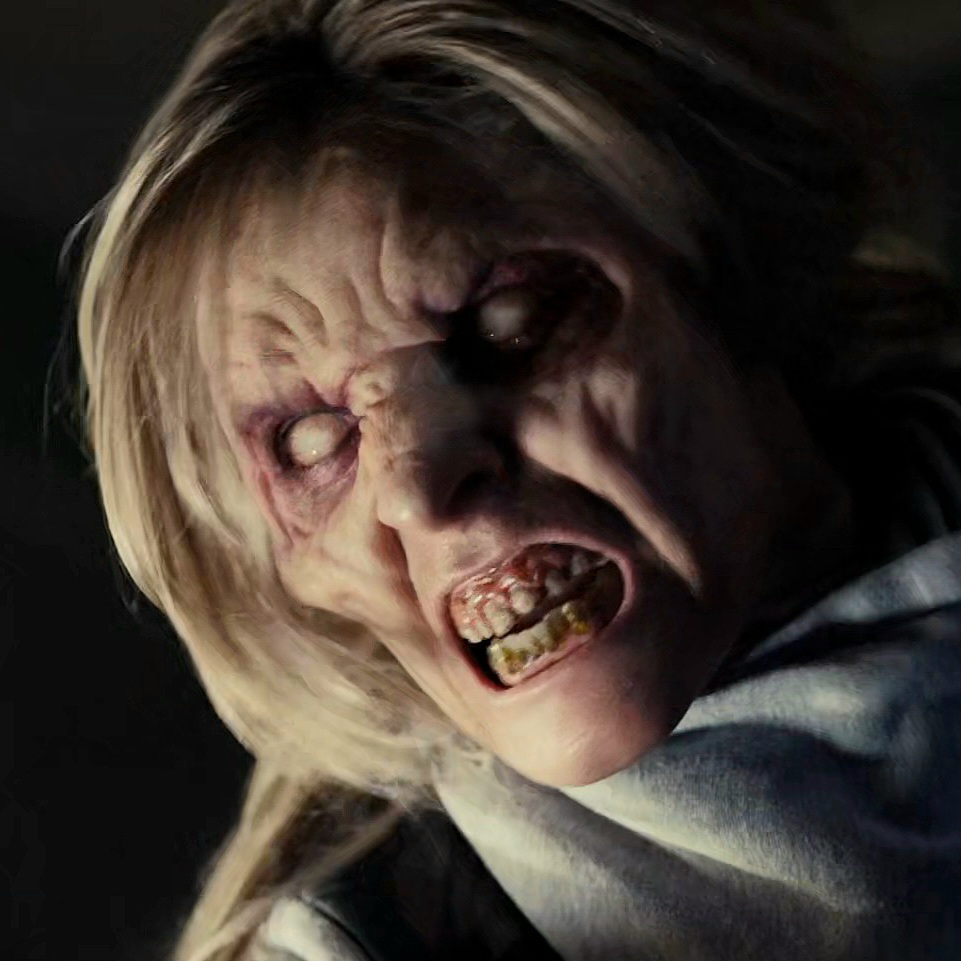
A prostitute who spends the night with Ash Williams while he drunkenly reads from the Necronomicon. After becoming possessed by a Kandarian demon, she transforms into a Deadite and kills Detective John Carson before being destroyed by Amanda Fisher.
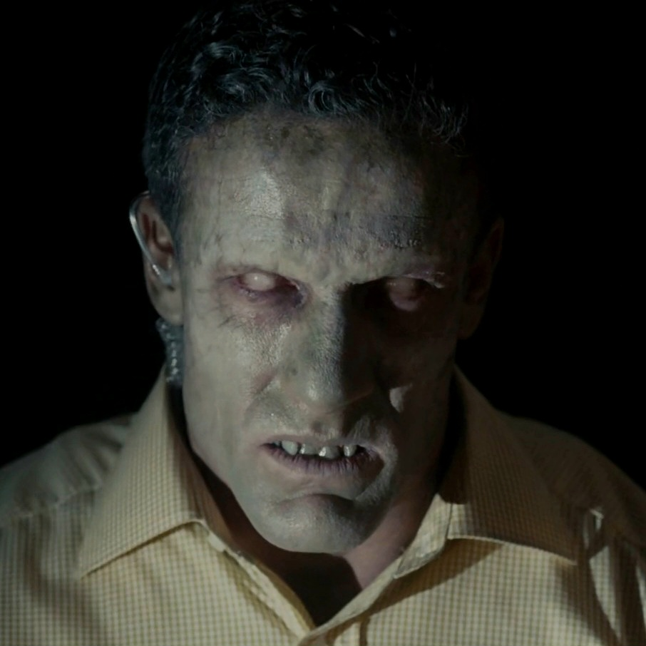
Amanda Fisher’s partner in the Michigan State Police. While investigating the aftermath of the Necronomicon’s release, Carson is killed by a Deadite and later resurrected as one himself, forcing Amanda to face the horror of the Evil Dead.
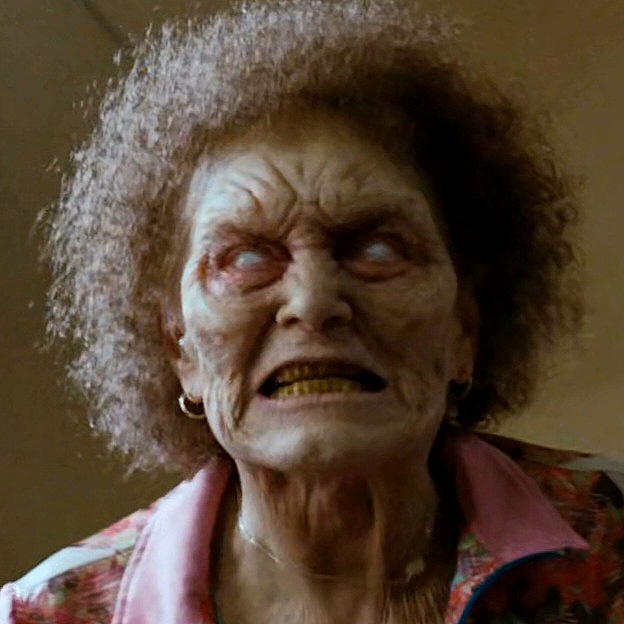
Ash Williams’ elderly neighbour at Mossy Haven Trailer Park. After Ash leaves and asks her to watch over his trailer, Vivian is possessed by a Kandarian demon and becomes a Deadite before being killed by Ash.
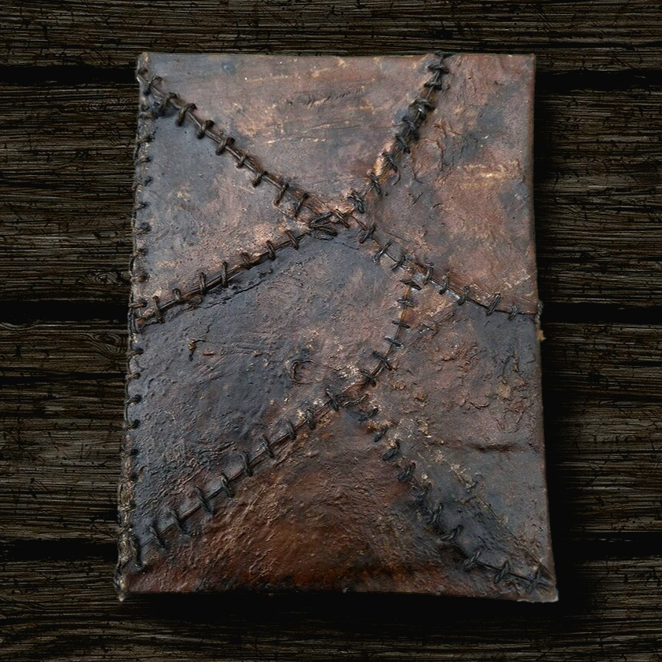
This version of the book was discovered in Evil Dead 4 (2013) by five friends who awaken the ancient evil. The deadites this entity brings forward are self-mutilating, vulgar tormentors that enjoy body horror.
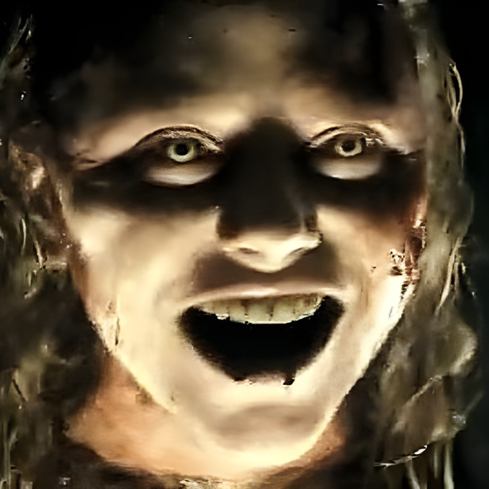
The first Deadite encountered in Evil Dead (2013). After reading from the Necronomicon, the Kandarian Demon possesses a young woman, driving her to murder her mother before she is captured by the local community. Burned alive by her father, Harold, she continues to taunt him until he is forced to shoot her, demonstrating the terrifying resilience of the Deadites.
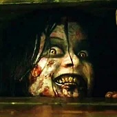
A recovering drug addict who travels to a remote cabin with her friends in an attempt to overcome her addiction. After becoming possessed by a Kandarian demon, Mia endures unimaginable torment before ultimately breaking free of the possession and defeating the Abomination, becoming one of the few survivors to overcome the Evil Dead.
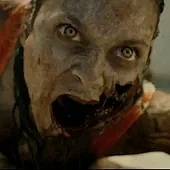
Mia's close friend and a registered nurse who helps supervise her withdrawal at the remote cabin. After becoming possessed by a Kandarian demon, Olivia transforms into a violent Deadite and brutally attacks Eric after cutting off her own face before being repeated bashed in the head with a chunk of broken toilet.
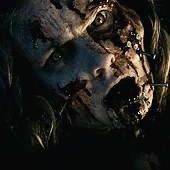
David's girlfriend who joins the group at the cabin to support Mia through her recovery. After being bitten by a Deadite, Natalie slowly becomes possessed by a Kandarian demon, forcing David to kill her after she nearly murdered Eric.
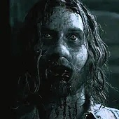
David's friend whose curiosity leads him to read from the Naturom Demonto despite repeated warnings. Although he resists possession longer than the others, Eric eventually succumbs to the Kandarian evil and becomes a Deadite shortly after his death.
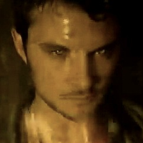
Mia's older brother and the group's reluctant leader. After battling to save his sister from the evil unleashed by the Necronomicon, David is eventually possessed himself during the film's climax. Although his time as a Deadite is brief, he becomes another victim of the ancient evil before his death.
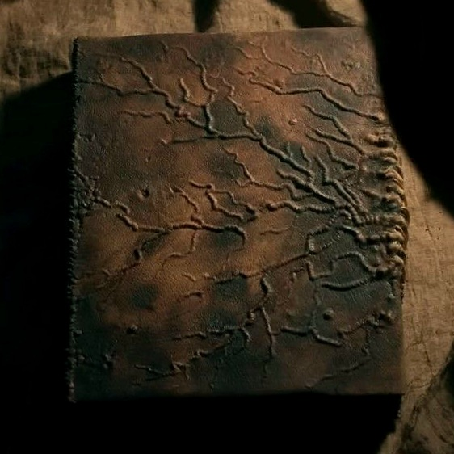
The third known copy is the One within teeth, often referred to as Bitey McFly. The deadites summoned from this version of the book seem to have an obsessive fascination with family bonds and corruption through bloodlines. The entity enjoy becoming fully absorbed into playing the victims they possess, making them appear like corrupted versions of who they used to be.
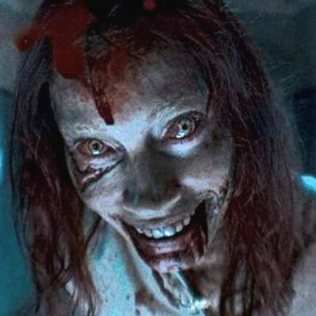
A devoted mother of three whose life is shattered after the Necronomicon is unleashed. Possessed by a Kandarian demon, Ellie becomes a cruel and relentless Deadite, tormenting her own family before ultimately merging into the grotesque Marauder.
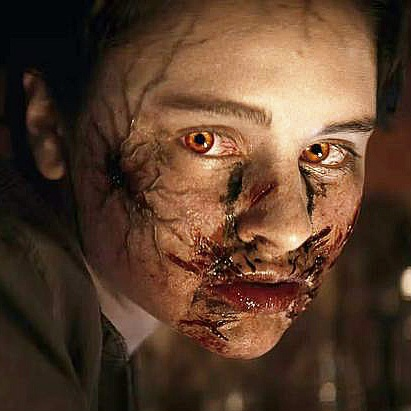
Ellie's eldest daughter. After being wounded during the Deadite outbreak, Bridget gradually succumbs to Kandarian possession and becomes a vicious Deadite, turning against her own family.
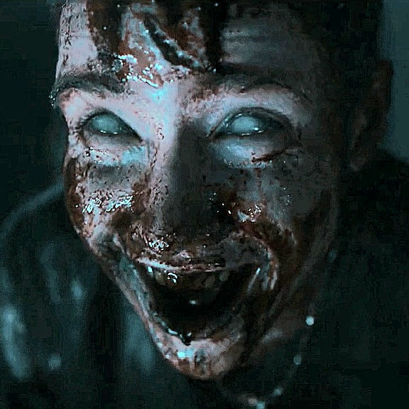
Ellie's son, whose discovery of the Necronomicon and its recordings unleashes the Kandarian evil. Mortally wounded during the outbreak, Danny is later possessed, becoming a Deadite before finally being put to rest.
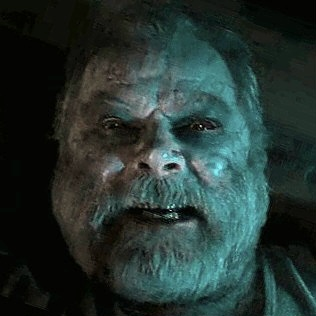
An elderly resident of the apartment building and owner of the shotgun later used by Beth. After falling victim to the Kandarian Demon, Mr. Fonda returns as a Deadite, joining the growing horrors within the building and taunting Beth as she takes his weapon.
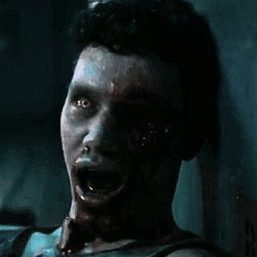
A resident of Ellie's apartment building, Gabriel answers the commotion in the hallway after the Kandarian Demon takes hold. He is brutally attacked by the possessed Ellie, who bites out his eye before killing him. Gabriel later returns as a Deadite, becoming another victim and servant of the evil unleashed by the Necronomicon.
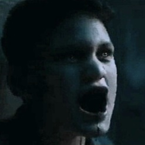
A resident of the apartment building and the brother of Gabriel. After the Deadite curse unleashed by Ellie spreads through the building, Scott becomes one of the victims of the Kandarian Demon. His transformation adds another layer to the growing supernatural horror within the apartment, as the evil turns the residents against one another.
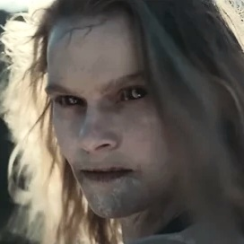
A young woman whose encounter with the Kandarian evil at the end of Evil Dead Rise, marks the beginning of Evil Burn. After becoming possessed by a Kandarian demon, Jessica transforms into a savage Deadite, brutally murdering those around her before her story sets the events of the next film in motion.
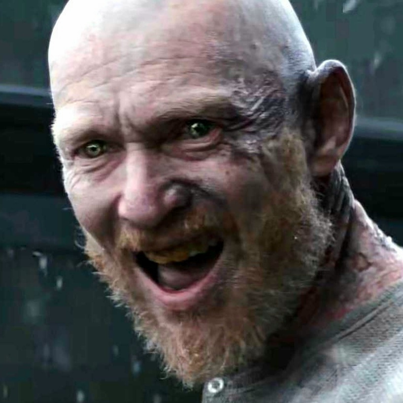
The abusive patriarch of the Price family. After becoming possessed by a Kandarian demon, Edgar transforms into a brutal Deadite whose immense strength and relentless violence make him one of the film's most terrifying antagonists.
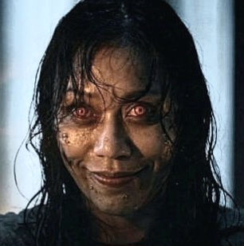
Joseph's girlfriend and a close friend of Alice. After becoming possessed by a Kandarian demon, Thya transforms into a sadistic Deadite whose unsettling behaviour, including drinking molten candle wax, makes her one of the most memorable monsters in Evil Dead Burn.